Click here to download the full course documentation conatining this tutorial.
Phylogenetics pertains the study of the evolutionary relationships between organisms (species, strains, etc), genes or even genomes and, should represent the evolutionary history of such entities by showing how closely related they are [1, 2]. Usually this is depicted as a phylogenetic tree. Initially, phylogenetic reconstruction relied on morphological and physiological characters but the problem with to using such characters in phylogenetic analysis are: i) these are prone to convergent evolution which leads to homoplasies; and, iii) the number of characters to infer from are often limited. With advances in molecular biology, DNA and protein sequences rapidly became the preferred characters for phylogenetic analysis. From molecular-based phylogenies, we can infer on how a given sequence has reached its current state (e.g. how has it changed in the face of selective pressures) or how is it expected to change in the future. In the scope of this course, phylogenetic analysis can be an invaluable tool to identify the origin of pathogens, how they have spread and even shed some light on cryptic transmission chains that were otherwise undetected by conventional epidemiological investigation. In this regard, phylogenies are an increasingly recognized tool to evaluate and extract biologically relevant information from large molecular datasets [1-3].
To start a phylogenetic analysis, you generally start from a multiple sequence alignment constructed from a given dataset. The fundamental principle in a multiple sequence alignment is, that each column in the alignment should contain homologous residues, that is, with the same evolutionary origin and not the result of insertions or deletions in the sequence. As such, every position in an alignment can be considered an evolutionary marker and given the length of a simple gene it becomes immediately clear the increased robustness of molecular-based phylogenetics. It is therefore important to retain that a proper alignment contains an enormous amount of information.
Constructing a phylogenetic tree from a multiple sequence alignment can be done using methods that generally fall within two categories: distance-matrix methods (e.g. Unweighted Pair Group Method with Arithmetic Mean [UPGMA] or Neighbour-Joining) or discrete data methods (e.g. Maximum Likelihood or Bayesian methods). Distance based methods look at all pairwise comparison between sequences to calculate a simple distance metric, usually the percent of sequence difference to group isolates into a tree, while discrete data methods look at each column of the alignment and calculate the best tree that represents the individual information at each of these sites [1, 3].
Another factor affecting the way we can model the distances at each position and affect the genetic distances between isolates pertains to the fact that different sequences can evolve under different ways, under different models. For this, it is necessary to statistically model the substitution of nucleotides using a nucleotide substitution model. The simplest of these models is the Jukes and Cantor model introduced in 1969 (JC69) which assumes that the equilibrium frequencies for all four nucleotides are 25% and that any nucleotide has an equal probability of being replaced by any other nucleotide. On the other hand, the Kimura 1980 model (K80) distinguishes between transversions and transitions; and the General Time Reversible model (GTR) assumes a different rate for every possible substitution:
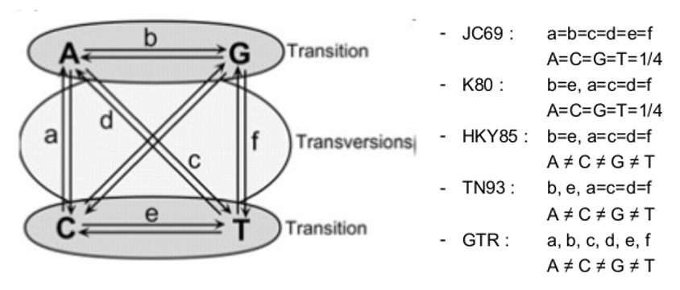There are other parameters that increase the complexity of these models of nucleotide substitution: unequal base frequencies (+F); varying proportions of invariant sites (+I); or variations in the substitution rate across sites (+G). A sequence may be evolving under any of these models, so it is important to determine which is the best fit to our data [2, 3].
But, how to evaluate the robustness of a tree and its branches? The most widely used test is called bootstrapping, where it randomly samples the entire alignment dataset column by column with replacement until achieving a sequence alignment with the length of the original one. This process is repeated several times (usually 1000 iterations) and the entire tree is recalculated for the pseudo-alignment every single time. By the end, all branches of the original tree are compared to check its presence in the trees obtained from the alignment sampling process. If a branch is present in 70% of these latter trees, it is generally assumed that this is a reliable grouping [1].
This module is composed by a set of 4 simple exercises in which you will be able construct phylogenetic trees from HIV sequence data and from WGS data obtained from M. tuberculosis clinical isolates. Also, you will need to assess the distances between these isolates using simple distance metrics as well as more robust models of molecular evolution and translate the latter into a phylogenetic tree that could be used to assess TB transmission dynamics and microevolution. The number of isolates to be used will be limited to cope with the limitations of the course computing system.
To get us started in this topic you will look into HIV sequence data for the gag gene. The gag gene is less diverse than the env gene and we will use it to investigate the possible transmission between different individuals. The data you will use has been generated to investigate the possible transmission between three individuals: MP1 and MP2 were married in the past and after their divorce MP1, having found to be infected with HIV-1, prompted an accusation that she had been infected by her ex-husband (MP2). Later, MP3, the current girlfriend of MP2 was also diagnosed with HIV-2. Different clones were sampled at the time of diagnosis by amplification of the env and gag genes. Extensive phylogenetic analysis using this transmission case has been published [4]:
• Romero-Severson EO, Bulla I, Hengartner N, Bartolo I, Abecasis A, Azevedo-Pereira JM, Taveira N, Leitner T. Donor-Recipient Identification in Para- and Poly-Phyletic Trees Under Alternative HIV-1 Transmission Hypotheses Using Approximate Bayesian Computation. Genetics 2017 Nov 207(3):1089-1101 PMID: 28912340 https://doi:10.1534/genetics.117.300284
A multifasta file containing the PCR amplified sequences of the subjects along with several local controls and additional sequences publicly available is available under the “HIV” subdirectory of “Module5” directory. You will need to i) align the sequences; ii) edit and trim the alignment; iii) determine the most adequate model for phylogenetic reconstruction; and, iv) perform the phylogenetic reconstruction and visualize the tree.
To start open Aliview (there is a shortcut in the desktop) and load the multifasta file (named HIVsequences_gag.fasta)
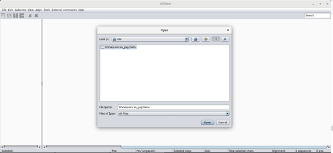This should open all sequences: 117 sequences for a total of 434 positions. Are the sequences aligned? Take a look at the sequences …
To align the sequences go to Align > Realign everything … You will be asked if you want to realign the entire alignment. It’s OK! This will align all sequences using MUSCLE.
Now comes the part where you need to inspect the alignment and edit it. It is important that the alignment maintains its codon structure and Aliview offers the possibility of toggling between nucleotide, codon and protein view. Use this to check the alignment! You will find the corresponding buttons in the tool bar. Another important point is to delete insertions that are absent for mor than 50% of the sequences. Do this by going into the Edito mode (Edit > Edit mode), selecting the columns you wish to delete and delete those (Ctrl+Delete). Make sure the sequences in the alignment start and end at the same position.
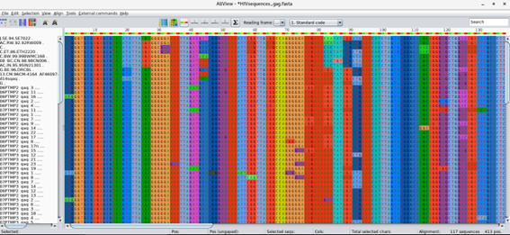Next save (File > Save as Fasta) the alignment to the same directory, please name it HIVsequences_gag_aligned.fasta!
We will next use IQTree to perform both phylogenetic reconstruction and determine the best fit nucleotide substitution model to our data [5]. IQTree can do both in one single command to check multiple examples just type from the command line:
$ cd ~/Module5 $ iqtree # For more detailed instructions: $ iqtree -h
To estimate the best-fit model we will run only the ModelFinder module (MF) [6]:
$ iqtree -s HIVsequences_gag_aligned.fasta -m MF
According to ModelFinder what is the model that best fits the data: __________________
To infer the maximum-likelihood tree with the best fit model and test for branch support using SH-aLRT:
$ iqtree -s HIVsequences_gag_aligned.fasta -alrt 1000 # Notice that you are specifying 1000 replicates for SH-aLRT.
After this step you should have the tree in the Newick format stored in a file named HIVsequences_gag_aligned.fasta.treefile.
You can now visualize the tree in FigTree, or try the online tool iTOL [7], Open the tree with FigTree (there is a shortcut in the desktop). What can you conclude from the tree topology? Does it support the patient accusation?
In the meanwhile check the visualization options of FigTree, namely the branch support calculated by IQTree.
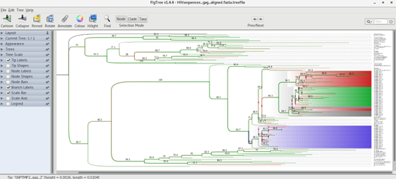Can you get something like this?
Now that you are more acquainted with phylogenetic inference, let’s try to pick up from the previous modules, we are going to perform a simple phylogenetic analysis of five M. tuberculosis clinical isolates:
• PT000033
• PT000049
• PT000050
• PT000271
• PT000279
You can look up at these isolates characteristics such as spoligotyping lineage, shared-type or drug resistance profile in http://cplp-tb.ff.ulisboa.pt.
The idea here is to start by constructing a DNA pseudo-molecule from concatenated SNPs. Of course, this will vary according to the isolates that we are about to use, if we included another isolate with a divergent sub-set of SNPs it would result in a longer sequence. These SNPs will be obtained from comparison against a reference sequence using a mapping approach similar to Module 1. This reference sequence will be the same as in Module 1: M. tuberculosis H37Rv (GenBank accession: NC000962.3). Whith this in mind, alignement won’t be necessary since we will be constructing this sequence from a SNP table. Such alignment can be called a core SNP alignment since each SNP occurs at a core site, that is, a site that is present at all sites.
In this exercise we will use Snippy, which finds SNPs between a haploid reference genome and your NGS sequence reads (https://github.com/tseemann/snippy). It will find both substitutions (SNPs) and insertions/deletions (indels). This script is designed with speed in mind, and produces a consistent set of output files in a single folder. It can then take a set of Snippy results using the same reference and generate a core SNP alignment (and ultimately a phylogenomic tree).
Let’s get started, open a terminal window and type:
$ cd Module5 $conda activate snippy $ snippy --cpus 1 --outdir PT000033 --ref ../course_files/NC000962_3.gbk --R1 ../course_files/PT000033_1.fastq.gz --R2 ../course_files/PT000033_2.fastq.gz
The command above specifies: the number of CPU cores to be used, one in this case due to limitations in the computing system (usually with a quad-core computer you can specify 8 CPUs); an output directory containing the output files (using the --outdir option); the reference (--ref) genbank file of the reference and your reads.
If everything runs ok the output files will be in the PT000033 directory. To go there type:
$ cd PT000033
Check if the following output files are present:
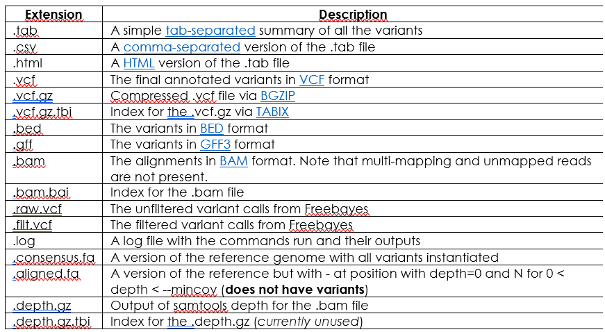For further information on file columns, fields or variant types you can check Snippy’s documentation at:
https://github.com/tseemann/snippy (Torsten Seemann)
Notice that Snippy already produces a Bam and annotated VCF file!
Let’s go back to the Module3 directory:
$ cd .. ## Now let’s look at what is in this directory: $ ls
After listing its contents you may have realize that this directory already has the four other Snippy sub-directories for the remaining isolates. These have been computed earlier using commands similar to the one above.
For this next step it is necessary to ensure that all Snippy directories have been created using the same reference genome. This is the case. Now we will use the snippy-core command to produce the core SNP listing and sequences:
$ snippy-core PT000033 PT000049 PT000050 PT000271 PT000279 --ref ../course_files/NC000962_3.gbk $ conda deactivate
This command will read-in the output files from the previous snippy commands (and within the respective directories) and produce another set of output files containing data from all strains specified above. List the contents of the present directory and you should find the following output files:
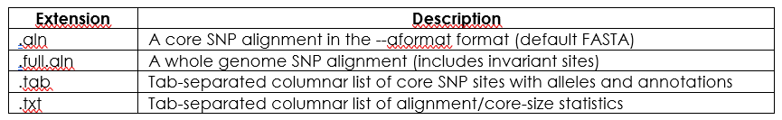The file core.aln will contain the core SNP alignment in FASTA format. Let’s look at it:
$ more core.aln
Does it seem ok?
At a first glimpse it might, but when dealing with genome-wide SNPs you might want to filter out some of these because some of these positions are associated with hard-to-map regions usually due to its repetitive nature. This is the case for PE/PPE genes which are usually not considered for M. tuberculosis phylogenetic analysis. As such, we will disregard this FASTA core SNP alignment file and we will build a new one from the core.tab file. This file contains the SNPs along with the respective position on the reference genome along with some data on gene product and gene id associated with the SNPs.
Give this file a look by typing:
$ more core.tab
Now, to use this file we will use an R-written script to concatenate the columns of this table but not before removing:
• Positions associated with PE/PPE genes;
• Positions with a unique K-mer length below 49/50 – gives an estimate of the mappability of the region by considering only positions that have a unique K-mer ending at that position of 49/50 bp in length (with the k-mer length set to 56bp).
This script requires some pre-computed data containing the k-mer scores at each position and the positions associated with PE/PPE genes (at ~/library_files/). To execute this script just type (assuming you are still within the ~/Module3/PT000033/ directory):
$ SNPtable_filter_Mtb.R core.tab
This command should have produced a file called coreSNP_alignment_filtered.fas from the SNP table. Let’s look at it:
$ more coreSNP_alignment_filtered.fas
Similar to the core.aln file, right? The difference is that it does not contain a number of positions that may effectively influence your phylogenetic analysis.
By the end of this exercise you should have a file containing your aligned SNPs, ready for phylogenetic reconstruction.
For this quick exercise we will compare sequences by simply counting the number of difference between these. This distance metric is called the Hamming distance and if we express this as the proportion of the number of sites that are different, we get the p-distance. Of course, these metrics do not account for multiple substitutions, substitution rate biases or differences in the evolutionary rates across sites.
To get the SNP distance separating our isolates we will use another R-written script from the command-line: HammingFasta.R. This script will output a distance matrix on the screen and will produce a csv file (you can try to open it with LibreOffice Calc) containing the matrix. To do this type:
$ HammingFasta.R coreSNP_alignment_filtered.fas
Did you get something like this on the screen?
What does this mean? What can be the public health implications from this comparison?
Which strains can be from patients with putative epidemiological links?
What can you learn from these strains in CPLP-TB database (http://cplp-tb.ff.ulisboa.pt)?
In the previous exercise you have already evaluate pairwise distance between isolates, but you did not obtain any phylogeny. Although it would be straightforward if we want to know in more detail the transmission dynamics and how these strains are evolving we need more robust methods to reconstruct the phylogeny of these strains. In this exercise we will use Maximum Likelihood methods to do that. We will start with the alignment in the coreSNP_alignment_filtered.fas file. By the way, we are done with the command-line for the day. From now on it’s just clicking!
The first step will consist in evaluating what is the model of nucleotide substitution that best fits our data. To do that we will use a program called jModelTest2, which is written in JAVA [8]. To start it just double-click on its shortcut that you can find in the desktop.
Once it starts, you should see something like:
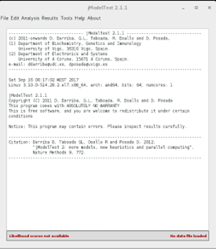Now, go to File > Load DNA alignment and open your alignment file (coreSNP_alignment_filtered.fas). Once it opens it will tell you the number of sequences and the number of sites in your alignment.v
Next, go to Analysis > Compute likelihood scores:
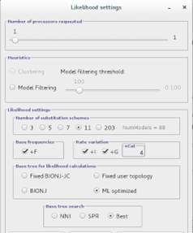Here you can choose the Likelihood settings. We will keep with the default settings except (to speed-up the analysis) we will only test 5 substitution schemes: Check that unequal base frequencies (+F), rate variation (+G) and invariant sites (+I) are selected. Choose a base tree for likelihood calculation that is ML optimized and for base tree search choose Best of NNI and SPR.
Once this analysis is over the software has calculated the likelihood score for each model. This likelihood score is usually a very low number and it is usually to be presented as the negative of its natural logarithm (-lnL). The lower this -lnL value the more likely the model is. Different model comparison algorithms are implemented in jModelTest. After the module evaluation you can go to Analysis menu and calculate the Akaike information Criterion (AIC), Bayesian information criterion (BIC) and Decision theory method. You can run all three tests with standard settings. The output will be on the screen, you have to scroll up to see the model list from each method, the best model comes first, notice its -lnL value and the weight column.
Here is an example for the AIC method:
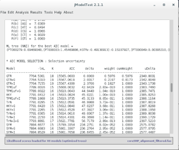According to the output of these programs, which model presents the best fit to our dataset? _________________
Do all the methods agree on it? ____________________
And the second best?
AIC is more liberal than BIC and penalizes free parameters less strongly, which may lead to preference for more complex models when simpler models may be a good fit as well.
What can we do if there is no agreement between decision methods?
Since all methods appear to agree on GTR, we will stick with it for the last part. We will reconstruct the phylogenetic tree of these isolates. For this purpose, we will use Seaview. Open Seaview using the shortcut on the desktop and go to File > Open and open the alignment file. The alignment immediately appears in the alignment window. To construct a Maximum Likelihood phylogenetic tree from this data, go to Trees > PhyML. A window should appear:
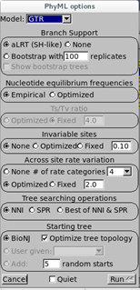Here, we will set the parameters based on the calculations from jModelTest:
Branch Support: choose aLRT (approximate Likelihood Ratio Test) instead of bootstrapping. This is a more recent method based over likelihood gains from the present branch against a null (collapsing the branch) hypothesis. aLRT is, statistically speaking, less obscure than bootstrap and provides you a p-value [2, 9]. For example, the probability of a false positive on branch with aLRT score of 0.95 is 5% (0.05).
Nucleotide Equilibrium Frequencies: Choose empirical (it will calculate from sequence) as the model selected was not +F.
Invariable Sites: Choose None as the selected nodel was not +I (otherwise you would choose Optimized to calculate from data or Fixed and you would have to specify a value).
Across site rate variation: Choose None as the model was not +G.
Tree searching operations: Choose Best of NNI & SPR.
Starting Tree: Choose BioNJ to calculate a starting tree and leave Optimize Tree Selection selected.
Then click Run.
As this alignment does not have many strains it will run rapidly. When the calculations end click OK.
This will show you the tree. You can check Br support checkbox to visualize the aLRT scores:
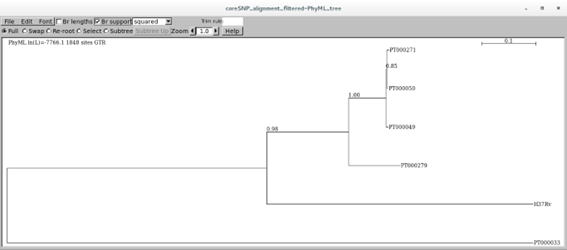You can try different visualization options other than squared.
What can you tell from this tree? How about the branches, do they seem statistically robust?
Tip: The tree can be saved in the Newick format (parenthetic). Just go to File > Save as rooted/unrooted tree.
Tip: Try iTOL (Interactive Tree of Life) online tool to annotate your tree after saving in the Newick format
1 Baldauf SL. Phylogeny for the faint of heart: a tutorial. Trends Genet. 2003; 19: 345-351.
2 De Bruyn A, Martin DP, Lefeuvre P. Phylogenetic reconstruction methods: an overview. Methods Mol Biol. 2014; 1115: 257-277.
3 Lemey P, Salemi M, Vandamme AM. The Phylogenetic Handbook: A Practical Approach to Phylogenetic Analysis and Hypothesis Testing. Cambridge: Cambridge University Press, 2009.
4 Romero-Severson EO, Bulla I, Hengartner N, et al. Donor-Recipient Identification in Para- and Poly-phyletic Trees Under Alternative HIV-1 Transmission Hypotheses Using Approximate Bayesian Computation. Genetics. 2017; 207: 1089-1101.
5 Nguyen LT, Schmidt HA, von Haeseler A, Minh BQ. IQ-TREE: a fast and effective stochastic algorithm for estimating maximum-likelihood phylogenies. Mol Biol Evol. 2015; 32: 268-274.
6 Kalyaanamoorthy S, Minh BQ, Wong TKF, von Haeseler A, Jermiin LS. ModelFinder: fast model selection for accurate phylogenetic estimates. Nat Methods. 2017; 14: 587-589.
7 Letunic I, Bork P. Interactive Tree Of Life (iTOL) v4: recent updates and new developments. Nucleic Acids Res. 2019; 47: W256-W259.
8 Darriba D, Taboada GL, Doallo R, Posada D. jModelTest 2: more models, new heuristics and parallel computing. Nat Methods. 2012; 9: 772.
9 Anisimova M, Gascuel O. Approximate likelihood-ratio test for branches: A fast, accurate, and powerful alternative. Syst Biol. 2006; 55: 539-552.
<<-HOME